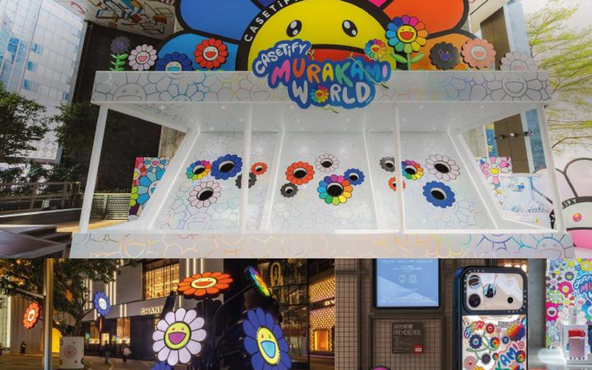

2025 / 香港希慎广场 / 村上隆 x CASETiFY
村上隆 x CASETiFY: FLOWERS BLOOM
A Hong Kong retail showcase bringing Takashi Murakami's flower language into everyday products and city space.
村上隆 x CASETiFY 系列在香港希慎广场绽放，将笑脸太阳花视觉带入城市日常。
Back to Projects
A Hong Kong retail showcase bringing Takashi Murakami's flower language into everyday products and city space.
村上隆 x CASETiFY 系列在香港希慎广场绽放，将笑脸太阳花视觉带入城市日常。
Back to Projects